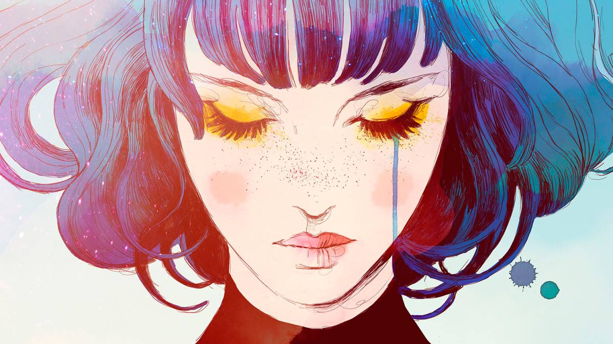

EL ARTE EN LOS VIDEOJUEGOS


Gris:
Es un videojuego de aventuras y plataformas desarrollado por un estudio español; publicado por DevolverDigital para Nintendo Switch, macOS y Microsoft windows. Trata de una chica llamada Gris, igual que el color de su mundo, que a lo largo de su aventura va dando color a su mundo. La técnica de dibujo que se emplea es acuarela. En las imágenes se puede ver que se ha pintado a capas los fondos, los degradados, las luces y sombrasy el pelo. En este videojuego se emplean todo tipo de colores, pero el color principal es el azul.
